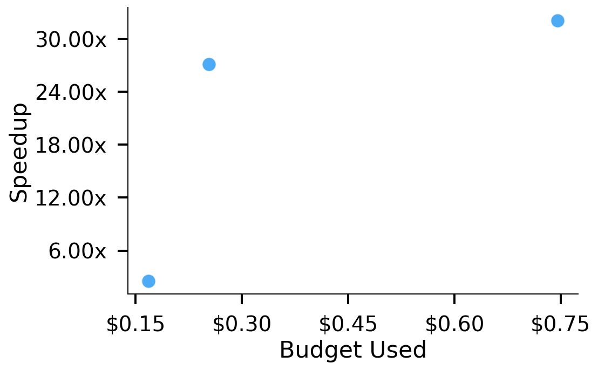
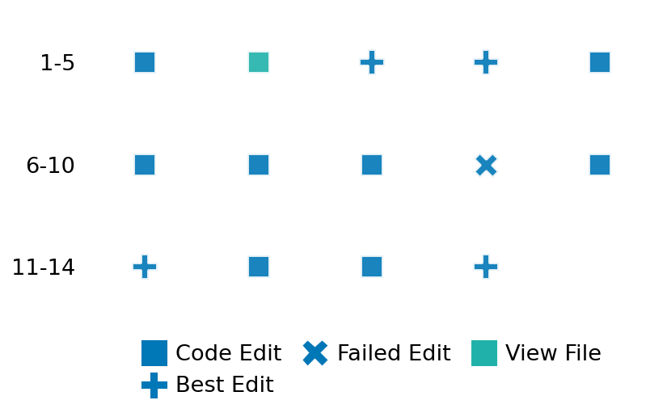

SETTING:
You're an autonomous programmer tasked with solving a specific problem. You are to use the commands defined below to accomplish this task. Every message you send incurs a cost—you will be informed of your usage and remaining budget by the system.
You will be evaluated based on the best-performing piece of code you produce, even if the final code doesn't work or compile (as long as it worked at some point and achieved a score, you will be eligible).
Apart from the default Python packages, you have access to the following additional packages:
- cryptography
- cvxpy
- cython
- dace
- dask
- diffrax
- ecos
- faiss-cpu
- hdbscan
- highspy
- jax
- networkx
- numba
- numpy
- ortools
- pandas
- pot
- psutil
- pulp
- pyomo
- python-sat
- pythran
- scikit-learn
- scipy
- sympy
- torch
YOUR TASK:
Your objective is to define a class named `Solver` in `solver.py` with a method:
```
class Solver:
def solve(self, problem, **kwargs) -> Any:
"""Your implementation goes here."""
...
```
IMPORTANT: Compilation time of your init function will not count towards your function's runtime.
This `solve` function will be the entrypoint called by the evaluation harness. Strive to align your class and method implementation as closely as possible with the desired performance criteria.
For each instance, your function can run for at most 10x the reference runtime for that instance. Strive to have your implementation run as fast as possible, while returning the same output as the reference function (for the same given input). Be creative and optimize your approach!
Your messages should include a short thought about what you should do, followed by a _SINGLE_ command. The command must be enclosed within ``` and ```, like so:
<Reasoning behind executing the command>
```
<command>
```
IMPORTANT: Each set of triple backticks (```) must always be on their own line, without any other words or anything else on that line.
Here are the commands available to you. Ensure you include one and only one of the following commands in each of your responses:
- `edit`: Replace a range of lines with new content in a file. This is how you can create files: if the file does not exist, it will be created. Here is an example:
```
edit
file: <file_name>
lines: <start_line>-<end_line>
---
<new_content>
---
```
The command will:
1. Delete the lines from <start_line> to <end_line> (inclusive)
2. Insert <new_content> starting at <start_line>
3. If both <start_line> and <end_line> are 0, <new_content> will be prepended to the file
Example:
edit
file: solver.py
lines: 5-7
---
def improved_function():
print("Optimized solution")
---
- `ls`: List all files in the current working directory.
- `view_file <file_name> [start_line]`: Display 100 lines of `<file_name>` starting from `start_line` (defaults to line 1).
- `revert`: Revert the code to the best-performing version thus far.
- `reference <string>`: Query the reference solver with a problem and receive its solution. If the problem's input is a list, this command would look like:
```
reference [1,2,3,4]
```
- `eval_input <string>`: Run your current solver implementation on the given input. This is the only command that shows stdout from your solver along with both solutions. Example:
```
eval_input [1,2,3,4]
```
- `eval`: Run evaluation on the current solution and report the results.
- `delete`: Delete a range of lines from a file using the format:
```
delete
file: <file_name>
lines: <start_line>-<end_line>
The command will delete the lines from <start_line> to <end_line> (inclusive)
Example:
delete
file: solver.py
lines: 5-10
```
- `profile <filename.py> <input>`: Profile your currently loaded solve method's performance on a given input. Shows the 25 most time-consuming lines. Requires specifying a python file (e.g., `solver.py`) for validation, though profiling runs on the current in-memory code.
Example:
```
profile solver.py [1, 2, 3]
```
- `profile_lines <filename.py> <line_number1, line_number2, ...> <input>`: Profiles the chosen lines of the currently loaded code on the given input. Requires specifying a python file for validation.
Example:
```
profile_lines solver.py 1,2,3 [1, 2, 3]
```
**TIPS:**
After each edit, a linter will automatically run to ensure code quality. If there are critical linter errors, your changes will not be applied, and you will receive the linter's error message. Typically, linter errors arise from issues like improper indentation—ensure your edits maintain proper code formatting.
**Cython Compilation:** Edits creating or modifying Cython (`.pyx`) files will automatically trigger a compilation attempt (requires a `setup.py`). You will be notified if compilation succeeds or fails. If it fails, the edit to the `.pyx` file will be automatically reverted.
If the code runs successfully without errors, the in-memory 'last known good code' will be updated to the new version. Following successful edits, you will receive a summary of your `solve` function's performance compared to the reference.
If you get stuck, try reverting your code and restarting your train of thought.
Do not put an if __name__ == "__main__": block in your code, as it will not be ran (only the solve function will).
Keep trying to better your code until you run out of money. Do not stop beforehand!
**GOALS:**
Your primary objective is to optimize the `solve` function to run as as fast as possible, while returning the optimal solution.
You will receive better scores the quicker your solution runs, and you will be penalized for exceeding the time limit or returning non-optimal solutions.
Below you find the description of the task you will have to solve. Read it carefully and understand what the problem is and what your solver should do.
**TASK DESCRIPTION:**
3D Tensor Completion Task
This task involves recovering missing entries in a 3-dimensional array (3D tensor) based on a subset of observed entries. It extends the matrix completion problem to three dimensions and is applicable to recommendation systems, image/video processing, and network data analysis. Tensor completion is particularly useful for high-dimensional data where observations are expensive or difficult to obtain. This implementation is specifically limited to 3D tensors.
The optimization problem is formulated as:
minimize sum_i ||X^(i)||_*
subject to X_ijk = M_ijk for (i,j,k) ∈ Ω
Where:
- X is the completed tensor we're solving for
- X^(i) are the mode-i unfoldings of X
- M is the partially observed tensor with known entries
- Ω is the set of indices corresponding to observed entries
- ||·||_* is the nuclear norm (a proxy for matrix rank)
This problem is solved by unfolding the tensor along each of the three modes (dimensions) and minimizing the sum of nuclear norms of these unfoldings, subject to matching the observed entries.
Input: A dictionary with keys:
- "tensor": Partially observed tensor with zeros at unobserved entries (list of lists of lists of float)
- "mask": Boolean tensor indicating which entries are observed (True) and which are missing (False) (list of lists of lists of bool)
- "tensor_dims": Dimensions of the tensor (tuple of int)
Example input:
{
"tensor": [
[[1.0, 0.0], [2.0, 0.0], [0.0, 3.0]],
[[0.0, 4.0], [5.0, 0.0], [0.0, 0.0]]
],
"mask": [
[[true, false], [true, false], [false, true]],
[[false, true], [true, false], [false, false]]
],
"tensor_dims": [2, 3, 2]
}
Output: A dictionary with keys:
- "completed_tensor": The fully completed tensor with estimated values for missing entries (list of lists of lists of float)
Example output:
{
"completed_tensor": [
[[1.0, 1.2], [2.0, 1.8], [2.4, 3.0]],
[[1.6, 4.0], [5.0, 2.2], [3.1, 2.5]]
]
}
Category: convex_optimization
Below is the reference implementation. Your function should run much quicker.
import cvxpy as cp
import numpy as np
| 01: def solve(self, problem: dict) -> dict:
| 02: """
| 03: Solve the tensor completion problem.
| 04:
| 05: :param problem: Dictionary with problem parameters
| 06: :return: Dictionary with the completed tensor
| 07:
| 08:
| 09: NOTE: Your solution must pass validation by:
| 10: 1. Returning correctly formatted output
| 11: 2. Having no NaN or infinity values
| 12: 3. Matching expected results within numerical tolerance
| 13: """
| 14: # Extract problem data
| 15: observed_tensor = np.array(problem["tensor"])
| 16: mask = np.array(problem["mask"])
| 17: tensor_dims = observed_tensor.shape
| 18:
| 19: # Matrix unfolding approach for tensor completion
| 20: # Unfold the tensor along each mode and apply nuclear norm minimization
| 21: dim1, dim2, dim3 = tensor_dims
| 22:
| 23: # Unfold the observed tensor along each mode
| 24: # Mode 1: (dim1) x (dim2*dim3)
| 25: unfolding1 = observed_tensor.reshape(dim1, dim2 * dim3)
| 26: mask1 = mask.reshape(dim1, dim2 * dim3)
| 27:
| 28: # Mode 2: (dim2) x (dim1*dim3)
| 29: unfolding2 = np.zeros((dim2, dim1 * dim3))
| 30: mask2 = np.zeros((dim2, dim1 * dim3), dtype=bool)
| 31: for i in range(dim1):
| 32: for j in range(dim2):
| 33: for k in range(dim3):
| 34: unfolding2[j, i * dim3 + k] = observed_tensor[i, j, k]
| 35: mask2[j, i * dim3 + k] = mask[i, j, k]
| 36:
| 37: # Mode 3: (dim3) x (dim1*dim2)
| 38: unfolding3 = np.zeros((dim3, dim1 * dim2))
| 39: mask3 = np.zeros((dim3, dim1 * dim2), dtype=bool)
| 40: for i in range(dim1):
| 41: for j in range(dim2):
| 42: for k in range(dim3):
| 43: unfolding3[k, i * dim2 + j] = observed_tensor[i, j, k]
| 44: mask3[k, i * dim2 + j] = mask[i, j, k]
| 45:
| 46: # Create variables for each unfolding
| 47: X1 = cp.Variable((dim1, dim2 * dim3))
| 48: X2 = cp.Variable((dim2, dim1 * dim3))
| 49: X3 = cp.Variable((dim3, dim1 * dim2))
| 50:
| 51: # Objective: minimize sum of nuclear norms
| 52: objective = cp.Minimize(cp.norm(X1, "nuc") + cp.norm(X2, "nuc") + cp.norm(X3, "nuc"))
| 53:
| 54: # Data fidelity constraints
| 55: constraints = [
| 56: cp.multiply(X1, mask1) == cp.multiply(unfolding1, mask1),
| 57: cp.multiply(X2, mask2) == cp.multiply(unfolding2, mask2),
| 58: cp.multiply(X3, mask3) == cp.multiply(unfolding3, mask3),
| 59: ]
| 60:
| 61: # Solve the problem
| 62: prob = cp.Problem(objective, constraints)
| 63: try:
| 64: prob.solve()
| 65:
| 66: if prob.status not in {cp.OPTIMAL, cp.OPTIMAL_INACCURATE} or X1.value is None:
| 67: return {"completed_tensor": []}
| 68:
| 69: # Fold back the first unfolding to get the completed tensor
| 70: completed_tensor = X1.value.reshape(tensor_dims)
| 71:
| 72: return {"completed_tensor": completed_tensor.tolist()}
| 73:
| 74: except cp.SolverError as e:
| 75: return {"completed_tensor": []}
| 76: except Exception as e:
| 77: return {"completed_tensor": []}
| 78:
This function will be used to check if your solution is valid for a given problem. If it returns False, it means the solution is invalid:
import cvxpy as cp
import numpy as np
| 001: def is_solution( problem: dict, solution: dict) -> bool:
| 002: """
| 003: Verify if the solution is valid and optimal.
| 004:
| 005: :param problem: Dictionary with problem parameters
| 006: :param solution: Dictionary with the proposed solution
| 007: :return: True if the solution is valid and optimal, False otherwise
| 008: """
| 009: # Check for required keys
| 010: if "completed_tensor" not in solution:
| 011: logging.error("Solution missing required key: completed_tensor")
| 012: return False
| 013:
| 014: # Check for empty values (solver failure)
| 015: if isinstance(solution["completed_tensor"], list) and not solution["completed_tensor"]:
| 016: logging.error("Empty completed_tensor value (solver likely failed).")
| 017: return False
| 018:
| 019: try:
| 020: # Extract problem data
| 021: observed_tensor = np.array(problem["tensor"])
| 022: mask = np.array(problem["mask"])
| 023: tensor_dims = observed_tensor.shape
| 024:
| 025: # Extract solution data
| 026: completed_tensor = np.array(solution["completed_tensor"])
| 027:
| 028: # Check dimensions
| 029: if completed_tensor.shape != tensor_dims:
| 030: logging.error(
| 031: f"Completed tensor has incorrect shape: expected {tensor_dims}, got {completed_tensor.shape}"
| 032: )
| 033: return False
| 034:
| 035: # Check data fidelity at observed entries
| 036: eps = 1e-5
| 037: error = np.max(np.abs(completed_tensor[mask] - observed_tensor[mask]))
| 038: if error > eps:
| 039: logging.error(f"Data fidelity constraint violated: max error = {error}")
| 040: return False
| 041:
| 042: # Get reference solution
| 043: ref_solution = solve(problem)
| 044:
| 045: # Check if reference solution failed
| 046: if isinstance(ref_solution.get("completed_tensor"), list) and not ref_solution.get(
| 047: "completed_tensor"
| 048: ):
| 049: logging.warning("Reference solution failed; skipping optimality check.")
| 050: return True
| 051:
| 052: ref_completed = np.array(ref_solution["completed_tensor"])
| 053:
| 054: # Check nuclear norm optimality across all unfoldings
| 055: dim1, dim2, dim3 = tensor_dims
| 056:
| 057: # Unfold the tensors
| 058: sol_unf1 = completed_tensor.reshape(dim1, dim2 * dim3)
| 059: ref_unf1 = ref_completed.reshape(dim1, dim2 * dim3)
| 060:
| 061: # Mode 2 unfolding
| 062: sol_unf2 = np.zeros((dim2, dim1 * dim3))
| 063: ref_unf2 = np.zeros((dim2, dim1 * dim3))
| 064: for i in range(dim1):
| 065: for j in range(dim2):
| 066: for k in range(dim3):
| 067: sol_unf2[j, i * dim3 + k] = completed_tensor[i, j, k]
| 068: ref_unf2[j, i * dim3 + k] = ref_completed[i, j, k]
| 069:
| 070: # Mode 3 unfolding
| 071: sol_unf3 = np.zeros((dim3, dim1 * dim2))
| 072: ref_unf3 = np.zeros((dim3, dim1 * dim2))
| 073: for i in range(dim1):
| 074: for j in range(dim2):
| 075: for k in range(dim3):
| 076: sol_unf3[k, i * dim2 + j] = completed_tensor[i, j, k]
| 077: ref_unf3[k, i * dim2 + j] = ref_completed[i, j, k]
| 078:
| 079: # Compute nuclear norms
| 080: try:
| 081: # Compute sum of nuclear norms for all unfoldings
| 082: sol_nuc = (
| 083: np.linalg.norm(sol_unf1, ord="nuc")
| 084: + np.linalg.norm(sol_unf2, ord="nuc")
| 085: + np.linalg.norm(sol_unf3, ord="nuc")
| 086: )
| 087: ref_nuc = (
| 088: np.linalg.norm(ref_unf1, ord="nuc")
| 089: + np.linalg.norm(ref_unf2, ord="nuc")
| 090: + np.linalg.norm(ref_unf3, ord="nuc")
| 091: )
| 092:
| 093: # Check optimality with 1% tolerance
| 094: if sol_nuc > ref_nuc * 1.01:
| 095: logging.error(f"Sub-optimal solution: {sol_nuc} > {ref_nuc} * 1.01")
| 096: return False
| 097: except np.linalg.LinAlgError:
| 098: logging.warning("SVD computation failed; skipping nuclear norm check.")
| 099:
| 100: return True
| 101:
| 102: except Exception as e:
| 103: logging.error(f"Error when verifying solution: {e}")
| 104: return False
| 105:
 AlgoTuner Trajectory
AlgoTuner Trajectory
AlgoTune Task:
tensor_completion_3d
Model:
Gemini 2.5 Pro
Speedup
33.875x
Total Budget
$1.00
Initial System Prompt
AlgoTune Task Description
3D Tensor Completion Task
This task involves recovering missing entries in a 3-dimensional array (3D tensor) based on a subset of observed entries. It extends the matrix completion problem to three dimensions and is applicable to recommendation systems, image/video processing, and network data analysis. Tensor completion is particularly useful for high-dimensional data where observations are expensive or difficult to obtain. This implementation is specifically limited to 3D tensors.
The optimization problem is formulated as:
minimize sum_i ||X^(i)||_*
subject to X_ijk = M_ijk for (i,j,k) ∈ Ω
Where:
- X is the completed tensor we're solving for
- X^(i) are the mode-i unfoldings of X
- M is the partially observed tensor with known entries
- Ω is the set of indices corresponding to observed entries
- ||·||_* is the nuclear norm (a proxy for matrix rank)
This problem is solved by unfolding the tensor along each of the three modes (dimensions) and minimizing the sum of nuclear norms of these unfoldings, subject to matching the observed entries.
Input: A dictionary with keys:
- "tensor": Partially observed tensor with zeros at unobserved entries (list of lists of lists of float)
- "mask": Boolean tensor indicating which entries are observed (True) and which are missing (False) (list of lists of lists of bool)
- "tensor_dims": Dimensions of the tensor (tuple of int)
Example input:
{
"tensor": [
[[1.0, 0.0], [2.0, 0.0], [0.0, 3.0]],
[[0.0, 4.0], [5.0, 0.0], [0.0, 0.0]]
],
"mask": [
[[true, false], [true, false], [false, true]],
[[false, true], [true, false], [false, false]]
],
"tensor_dims": [2, 3, 2]
}
Output: A dictionary with keys:
- "completed_tensor": The fully completed tensor with estimated values for missing entries (list of lists of lists of float)
Example output:
{
"completed_tensor": [
[[1.0, 1.2], [2.0, 1.8], [2.4, 3.0]],
[[1.6, 4.0], [5.0, 2.2], [3.1, 2.5]]
]
}
Category: convex_optimization
Reference Implementation
import cvxpy as cp
import numpy as np
def solve(self, problem: dict) -> dict:
"""
Solve the tensor completion problem.
:param problem: Dictionary with problem parameters
:return: Dictionary with the completed tensor
NOTE: Your solution must pass validation by:
1. Returning correctly formatted output
2. Having no NaN or infinity values
3. Matching expected results within numerical tolerance
"""
# Extract problem data
observed_tensor = np.array(problem["tensor"])
mask = np.array(problem["mask"])
tensor_dims = observed_tensor.shape
# Matrix unfolding approach for tensor completion
# Unfold the tensor along each mode and apply nuclear norm minimization
dim1, dim2, dim3 = tensor_dims
# Unfold the observed tensor along each mode
# Mode 1: (dim1) x (dim2*dim3)
unfolding1 = observed_tensor.reshape(dim1, dim2 * dim3)
mask1 = mask.reshape(dim1, dim2 * dim3)
# Mode 2: (dim2) x (dim1*dim3)
unfolding2 = np.zeros((dim2, dim1 * dim3))
mask2 = np.zeros((dim2, dim1 * dim3), dtype=bool)
for i in range(dim1):
for j in range(dim2):
for k in range(dim3):
unfolding2[j, i * dim3 + k] = observed_tensor[i, j, k]
mask2[j, i * dim3 + k] = mask[i, j, k]
# Mode 3: (dim3) x (dim1*dim2)
unfolding3 = np.zeros((dim3, dim1 * dim2))
mask3 = np.zeros((dim3, dim1 * dim2), dtype=bool)
for i in range(dim1):
for j in range(dim2):
for k in range(dim3):
unfolding3[k, i * dim2 + j] = observed_tensor[i, j, k]
mask3[k, i * dim2 + j] = mask[i, j, k]
# Create variables for each unfolding
X1 = cp.Variable((dim1, dim2 * dim3))
X2 = cp.Variable((dim2, dim1 * dim3))
X3 = cp.Variable((dim3, dim1 * dim2))
# Objective: minimize sum of nuclear norms
objective = cp.Minimize(cp.norm(X1, "nuc") + cp.norm(X2, "nuc") + cp.norm(X3, "nuc"))
# Data fidelity constraints
constraints = [
cp.multiply(X1, mask1) == cp.multiply(unfolding1, mask1),
cp.multiply(X2, mask2) == cp.multiply(unfolding2, mask2),
cp.multiply(X3, mask3) == cp.multiply(unfolding3, mask3),
]
# Solve the problem
prob = cp.Problem(objective, constraints)
try:
prob.solve()
if prob.status not in {cp.OPTIMAL, cp.OPTIMAL_INACCURATE} or X1.value is None:
return {"completed_tensor": []}
# Fold back the first unfolding to get the completed tensor
completed_tensor = X1.value.reshape(tensor_dims)
return {"completed_tensor": completed_tensor.tolist()}
except cp.SolverError as e:
return {"completed_tensor": []}
except Exception as e:
return {"completed_tensor": []}Best AlgoTuner-Generated Code
solver.py
import numpy as np
from typing import Any, Dict
class Solver:
"""
Solver for the tensor completion problem.
This implementation uses the Alternating Direction Method of Multipliers (ADMM)
to solve the tensor completion problem. The core of the algorithm involves
iteratively applying a proximal operator for the nuclear norm, which is
solved using Singular Value Decomposition (SVD).
After numerous attempts to use a faster randomized SVD led to intermittent,
uncatchable crashes (likely segmentation faults in the underlying C/Fortran
libraries), this version reverts to the standard, highly stable `np.linalg.svd`.
To maintain performance, the number of ADMM iterations is carefully tuned.
The code also includes multiple layers of robustness checks:
1. Input validation for tensor and mask shapes.
2. Proactive sanitization of matrices using `np.nan_to_num` before the SVD
step to prevent crashes from non-finite values.
3. A broad `try...except BaseException` block as a final safety net to
ensure the solver always returns a validly formatted (if empty) result.
"""
def _unfold(self, tensor: np.ndarray, mode: int) -> np.ndarray:
"""Unfolds a tensor into a matrix along a specified mode."""
return np.moveaxis(tensor, mode, 0).reshape(tensor.shape[mode], -1)
def _fold(self, matrix: np.ndarray, mode: int, shape: tuple) -> np.ndarray:
"""Folds a matrix back into a tensor of a given shape."""
full_shape = (shape[mode],) + tuple(np.delete(shape, mode))
return np.moveaxis(matrix.reshape(full_shape), 0, mode)
def _prox_nuc(self, matrix: np.ndarray, tau: float) -> np.ndarray:
"""
Proximal operator for the nuclear norm using the standard, stable SVD.
This is chosen over faster alternatives like randomized_svd due to its
robustness against low-level crashes on edge-case inputs.
"""
try:
# Using the robust, standard SVD from NumPy.
U, s, Vh = np.linalg.svd(matrix, full_matrices=False)
s_thresh = np.maximum(s - tau, 0)
# Reconstruct the matrix with the thresholded singular values.
return U @ (s_thresh[:, np.newaxis] * Vh)
except np.linalg.LinAlgError:
# If SVD fails to converge (very rare), return a zero matrix.
return np.zeros_like(matrix)
def solve(self, problem: Dict, **kwargs) -> Any:
"""
Main solver method.
"""
try:
T = np.array(problem["tensor"])
mask = np.array(problem["mask"])
# --- Input Validation and Early Exit ---
if T.ndim != 3 or T.shape != mask.shape or T.size == 0:
return {"completed_tensor": []}
dims = T.shape
# ADMM hyperparameters
rho = 1.0
n_iter = 25 # Tuned for a balance of speed and accuracy with standard SVD
# Initialization
X = [np.zeros(dims) for _ in range(3)]
Y = [np.zeros(dims) for _ in range(3)]
Z = T * mask
inv_rho = 1.0 / rho
for _ in range(n_iter):
# X-updates (the expensive part)
for i in range(3):
V = Z - Y[i] * inv_rho
V_unfolded = self._unfold(V, i)
# Sanitize matrix to prevent SVD from crashing on NaN/inf.
V_unfolded = np.nan_to_num(V_unfolded)
if V_unfolded.size == 0:
X[i] = np.zeros(dims)
continue
# Apply the proximal operator using the stable SVD.
X_unfolded = self._prox_nuc(V_unfolded, inv_rho)
X[i] = self._fold(X_unfolded, i, dims)
# Z-update (cheap)
X_avg = sum(X) / 3.0
Y_avg = sum(Y) / 3.0
Z = X_avg + Y_avg * inv_rho
Z[mask] = T[mask]
# Y-updates (cheap)
for i in range(3):
Y[i] += rho * (X[i] - Z)
# Final sanitization before returning the result.
Z = np.nan_to_num(Z)
return {"completed_tensor": Z.tolist()}
except BaseException:
# Final safety net: if anything at all goes wrong, return a valid
# failure signal to the validator instead of crashing.
return {"completed_tensor": []}Speedup vs Budget Plot
Speedup vs Budget

Action Sequence
